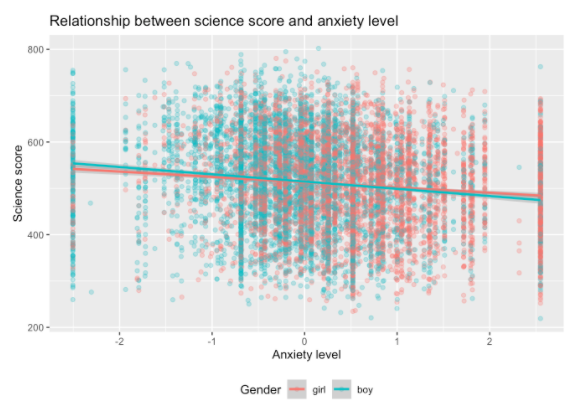

library(dplyr)
library(tidyverse)
• mutate function: 用data frame里面的数据创建新的数据
mutate(dataframe, science = (PV1SCIE + PV2SCIE + PV3SCIE + PV4SCIE + PV5SCIE +
PV6SCIE + PV7SCIE + PV8SCIE + PV9SCIE + PV10SCIE)
• select function: 按条件寻找需要的row,类似filter
select(science, science_fun = ST094Q01NA, science_time = SMINS,
stuweight = W_FSTUWT, gender=ST004D01T, anxtest = ANXTEST)
• 两者结合：
pisa_au %>%
mutate(science = rowMeans(select_at(., vars(starts_with("PV") & ends_with("SCIE"))))) %>%
select(science, everything())
ggplot作图：
Log Transforation 对数据进行log变换，之后做散点图和折线图
对数据进行分类作图：
pisa_au_science %>%
ggplot(aes(x = anxtest, y = science, colour = as.factor(gender))) +
geom_point(alpha = 0.3) +
geom_smooth(method = "lm") +
theme(legend.position = "bottom") +
ggtitle("Relationship between science score and anxiety level") +
labs(colour = "Gender") +
xlab("Anxiety level") +
ylab("Science score")
